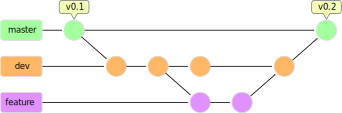
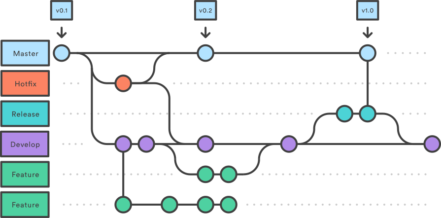

layout: true class: middle --- class: center # git 101 ## State of the art source management and version control <img width="250" src="https://upload.wikimedia.org/wikipedia/commons/e/e0/Git-logo.svg" /> ##### by Gabriele Musco <br /><br /> *<font size="4" color="grey">"Intro to git" is licensed under a Creative Commons Attribution-ShareAlike 4.0 International License. You should have received a copy of the license along with this work. If not, see <http://creativecommons.org/licenses/by-sa/4.0/>.</font>* --- # What is git? <img height="200" src="https://git-scm.com/images/branching-illustration@2x.png" /> - (*Free and open source software)* - Distributed version control system (VCS) - Collaborative work platform - **Essential** software development tool --- # What is a *version control system*?  Version control is a system that records changes to a file or set of files over time so that you can recall specific versions later. --- # Why should I care? - Revert selected files back to a previous state - Revert the entire project back to a previous state - Compare changes over time - See who last modified something that might be causing a problem, who introduced an issue and when --- class: center # How git can save your bacon 🥓 <asciinema-player src="./assets/gitsavingbacon.cast" font-size="small" theme="monokai"></asciinema-player> --- # Some (very brief) history - Created by Linus Torvalds in 2005 to manage the Linux source code  - Designed to be *fast* and simple to use --- ## Trivia > The name "git" was given by Linus Torvalds when he wrote the very first version. He described the tool as "the stupid content tracker" and the name as (depending on your way): > - random three-letter combination that is pronounceable, and not actually used by any common UNIX command. The fact that it is a mispronunciation of "get" may or may not be relevant. > - stupid. contemptible and despicable. simple. Take your pick from the dictionary of slang. > - "global information tracker": you're in a good mood, and it actually works for you. Angels sing, and a light suddenly fills the room. > - "goddamn idiotic truckload of shit": when it breaks --- # 📖 Basic vocabulary - Repository (repo) <!-- A repository is the most basic element of GitHub. They're easiest to imagine as a project's folder. A repository contains all of the project files (including documentation), and stores each file's revision history. Repositories can have multiple collaborators and can be either public or private. --> - Clone <!-- A clone is a copy of a repository that lives on your computer instead of on a website's server somewhere, or the act of making that copy. With your clone you can edit the files in your preferred editor and use Git to keep track of your changes without having to be online. It is, however, connected to the remote version so that changes can be synced between the two. You can push your local changes to the remote to keep them synced when you're online. --> - Commit <!-- A commit, or "revision", is an individual change to a file (or set of files). It's like when you save a file, except with Git, every time you save it creates a unique ID (a.k.a. the "SHA" or "hash") that allows you to keep record of what changes were made when and by who. Commits usually contain a commit message which is a brief description of what changes were made. --> - Push <!-- Pushing refers to sending your committed changes to a remote repository, such as a repository hosted on GitHub. For instance, if you change something locally, you'd want to then push those changes so that others may access them. --> - Pull <!-- Pull refers to when you are fetching in changes and merging them. For instance, if someone has edited the remote file you're both working on, you'll want to pull in those changes to your local copy so that it's up to date. --> - Remote <!-- This is the version of something that is hosted on a server, most likely GitHub. It can be connected to local clones so that changes can be synced. --> - Branch <!-- A branch is a parallel version of a repository. It is contained within the repository, but does not affect the primary or master branch allowing you to work freely without disrupting the "live" version. When you've made the changes you want to make, you can merge your branch back into the master branch to publish your changes. --> - Fork <!-- A fork is a personal copy of another user's repository that lives on your account. Forks allow you to freely make changes to a project without affecting the original. Forks remain attached to the original, allowing you to submit a pull request to the original's author to update with your changes. You can also keep your fork up to date by pulling in updates from the original. --> --- # Git is distributed - Every *clone* of a git repo is exactly identical to the original one - Allows for many different **workflows** --- class: center # Some popular workflows --- # Subversion style ### (don't use this)  --- # Integration Manager ### (aka what you do on GitHub)  --- # Dictator and Lieutenants ### (how it's done with the Linux kernel)  --- class: center # All of this is possible thanks to git's flexibility --- class: center  # Lab time! --- ## Requirements: - <svg style="width:24px;height:24px" viewBox="0 0 24 24"><path fill="#000000" d="M4,6H20V16H4M20,18A2,2 0 0,0 22,16V6C22,4.89 21.1,4 20,4H4C2.89,4 2,4.89 2,6V16A2,2 0 0,0 4,18H0V20H24V18H20Z" /></svg> A PC - <svg style="width:24px;height:24px" viewBox="0 0 24 24"><path fill="#000000" d="M20,19V7H4V19H20M20,3A2,2 0 0,1 22,5V19A2,2 0 0,1 20,21H4A2,2 0 0,1 2,19V5C2,3.89 2.9,3 4,3H20M13,17V15H18V17H13M9.58,13L5.57,9H8.4L11.7,12.3C12.09,12.69 12.09,13.33 11.7,13.72L8.42,17H5.59L9.58,13Z" /></svg> A terminal - <svg style="width:24px;height:24px" viewBox="0 0 24 24"><path fill="#000000" d="M12,2A10,10 0 0,0 2,12C2,16.42 4.87,20.17 8.84,21.5C9.34,21.58 9.5,21.27 9.5,21C9.5,20.77 9.5,20.14 9.5,19.31C6.73,19.91 6.14,17.97 6.14,17.97C5.68,16.81 5.03,16.5 5.03,16.5C4.12,15.88 5.1,15.9 5.1,15.9C6.1,15.97 6.63,16.93 6.63,16.93C7.5,18.45 8.97,18 9.54,17.76C9.63,17.11 9.89,16.67 10.17,16.42C7.95,16.17 5.62,15.31 5.62,11.5C5.62,10.39 6,9.5 6.65,8.79C6.55,8.54 6.2,7.5 6.75,6.15C6.75,6.15 7.59,5.88 9.5,7.17C10.29,6.95 11.15,6.84 12,6.84C12.85,6.84 13.71,6.95 14.5,7.17C16.41,5.88 17.25,6.15 17.25,6.15C17.8,7.5 17.45,8.54 17.35,8.79C18,9.5 18.38,10.39 18.38,11.5C18.38,15.32 16.04,16.16 13.81,16.41C14.17,16.72 14.5,17.33 14.5,18.26C14.5,19.6 14.5,20.68 14.5,21C14.5,21.27 14.66,21.59 15.17,21.5C19.14,20.16 22,16.42 22,12A10,10 0 0,0 12,2Z" /></svg> A GitHub account (<https://github.com/join>) - <svg style="width:24px;height:24px" viewBox="0 0 24 24"><path fill="#000000" d="M1.5,4V5.5C1.5,9.65 3.71,13.28 7,15.3V20H22V18C22,15.34 16.67,14 14,14C14,14 13.83,14 13.75,14C9,14 5,10 5,5.5V4M14,4A4,4 0 0,0 10,8A4,4 0 0,0 14,12A4,4 0 0,0 18,8A4,4 0 0,0 14,4Z" /></svg> A friend! --- class: center # Form groups of two <audio controls> <source src="./assets/sounds/quake_prepare_to_fight.opus" type="audio/ogg" /> </audio> --- # Install git #### Debian/Ubuntu: `sudo apt-get install git` #### Fedora: `sudo dnf install git` #### Gentoo: `sudo emerge --ask --verbose dev-vcs/git` #### Arch Linux/Antergos/Manjaro: `sudo pacman -S git` #### openSUSE: `sudo zypper install git` <br /><br /> #### Windows If you really have to use it, install the WSL and git on top of it. Alternatively use a VM. --- class: center # INTERMISSION ## You can now download this presentation! ```bash git clone https://github.com/gabmus/intro-to-git ``` --- # Setup your SSH key 1. Check for existing SSH keys - `ls -a ~/.ssh` - If you see at least `id_rsa` and `id_rsa.pub` go to 3 2. Generate a new SSH key - `ssh-keygen -t rsa -b 4096 -C "email@example.com"` 3. Add the key to the ssh-agent - `eval "$(ssh-agent -s)"` - `ssh-add ~/.ssh/id_rsa` --- # Add the SSH key to your GitHub account - `cat ~/.ssh/id_rsa.pub` - copy the output (all of it, from `ssh-rsa` to your email) - Go to your GitHub settings <!--  --> - In the user settings sidebar, click **SSH and GPG keys** - Click **New SSH key** or **Add SSH key** - In the "Title" field put a name to represent your computer (like your hostname) - Paste your key into the "Key" field - Click **Add SSH key** --- # Your task Make a very simple system monitor that shows CPU and RAM usage. ```txt CPU 0 [###### ] 16% CPU 1 [########## ] 27% CPU 2 [##### ] 13% CPU 3 [## ] 7% CPU 4 [#### ] 12% CPU 5 [#### ] 10% CPU 6 [#### ] 10% CPU 7 [### ] 9% RAM [################## ] 47% 3804060/8111408 kB ``` --- # Fork my repo - Go to <https://github.com/GabMus/verysimplesystemmonitor> - Press the _fork_ button  --- # Clone the newly forked repo using ssh ```bash git clone git@github.com:YourGithubUsername/verysimplesystemmonitor.git ``` --- # What you need to do You have to implement two modules in C++, respectively `cpu.cpp` and `ram.cpp` - `cpu.cpp` containing a `Cpu` class - The constructor takes an `int` value indicating the index of the core - Implements an `int get_used()` method that returns the percentage of use of the CPU core - `ram.cpp` containing a `Ram` class - Implements an `int get_used()` method that returns the currently used system memory (in kB) - Implements an `int get_total()` method that returns the total system memory (in kB) - Implements an `int get_used_percent()` method that returns the percentage of currently used system memory. --- ## A little help In Linux you can get info about the usage of the cpu by reading the `/proc/stat` file: - The first row contains info about the total CPU usage (you won't need this) - The following rows contain info about the single CPU cores/threads (you WILL need these) - Each of these rows looks something like this: - `cpu0 443724 891 185672 1335561 269 3185 2029 0 0 0` - The sum of the first three values indicates the _work jiffies_, while the sum of all of the values indicates the _total jiffies_. - Your Cpu class should remember two set of these jiffies, let's call them `work_jiffies_0`, `work_jiffies_1`, `total_jiffies_0` and `total_jiffies_1`. You can initialize all four to 0 upon creation of an object. - Each time you calculate the total load of the CPU core in percentage, you should store the values at time 1 into the values of time 0, fetch the new values for time 1 and do the following: ```c (int)( ((float)(work_jiffies_1 - work_jiffies_0) / (float)(total_jiffies_1 - total_jiffies_0)) * 100 ) ``` --- ## A little help In Linux you can get info about the usage of the system memory by reading the `/proc/meminfo` file: - The first line shows the total memory available in your system - The third line shows the memory that's currently available in your system --- ## Some more help... I have provided you with a `vector<string> split(string s, char delimiter)` function that splits a string by the provided delimiter (you may wanna use the space character) and returns the result as a standard C++ vector --- # Interact using git Once you have made a change that is a **milestone** (created a class or a method, fixed a bug...), stage it, commit it and maybe even push it. It's important to at least stage and commit frequently, to make sure that if anything goes wrong you can have a better understanding of the changes you made, so that you can idenify what causes bugs and problems a lot faster. --- # Interact using git #### Pull any latest change ```bash git pull ``` #### Staging a file ```bash git add filename # or if you want to stage everything in your working directory git add * ``` #### Making a commit ```bash git commit -m "message" # where message is a USEFUL description of the changes you made ``` #### Pushing commits ```bash git push ``` --- # Avoiding conflicts If you can, try to avoid editing the same file at the same time. This could lead to annoying conflicts that need to be resolved manually, and it can be a pain, expecially for big projects. --- # A final word This is not a programming class nor an exam! You can collaborate and help each other, or ask for help. It's better if you help someone that's not in your same group, just to stay true to the scope of this course. --- # Debriefing - How was this little test? - Did you understand how git can be useful? - Was it difficult to use git? - From this little test, do you think a version control system will benefit your work? --- class: center # Some more advanced git features --- ## The _Gitflow_  - `master` branch contains **stable** releases - Separate `dev` branch as an integration branch for _new features_ - Each new feature should have **its own branch** that's... branched off of `dev` - Once a feature is complete, it gets _merged_ back to `dev` - Once `dev` has enough features for a release, it gets branched onto a new `release` branch (not master!) - The `release` branch **should not contain any new features**, only bug fixes - Once the release is ready, it gets merged into both `master` and `dev` - In case a production release needs some fixes, `master` is branched in a new `hotfix` branch, and the fix is made - When the fix is ready, it gets merged into both `master` and `dev` --- # Branching <img src="https://pbs.twimg.com/media/CxB9XosXEAAiEnJ.jpg" style="height: 200px" /> Branching is the operation of "copying" your working repository away from another one. It means working on a separate area of the repository that doesn't affect the original branch it's coming from. This is useful when you have to work on a new feature that could potentially or temporarely break the whole project. As we've seen in the Gitflow, it's frequently used to separate the repository in different logic areas based on the release cycle. --- # How to do branching #### Create a new branch from the current one ```bash git checkout -b newbranchname ``` #### Move to a different branch ```bash git checkout branchname ``` #### Delete a branch (and delete it remotely as well) ```bash git branch -d branchname git push origin :branchname ``` #### Merge one branch into another ```bash git checkout branchyouwanttomergeto git merge branchyouwanttomergefrom # and then maybe delete the last branch ``` --- # Forks and Pull Requests <img src="http://ericsteinborn.com/github-for-cats/img/hardcore-forking.gif" style="width: 300px; float: left; margin-right: 15px" /> If you want to contribute to a public repository you don't have access to, this is the way to go. A Fork (in the GitHub and similar platforms contexts) is basically a _server side clone_ of a repository. If you Fork `GabMus/verysimplesystemmonitor` you end up with a new repository called `YourName/verysimplesystemmonitor`. This repository is yours and you can do whatever you want with it (as long as you respect the original license). You can clone your new fork (just as you did), and if you want to contribute the changes you made back to the original project, you can do that by making a Pull Request. It works similarly to a merge, but between two branches in different repositories. --- # Licenses Choosing a license for your projects is as important as writing the code for it. Without a license, your work is by default subject to the copyright laws, this means that just by publishing it you reserve any right on it. This means that nobody can modify, redistribute or alter your content, and this is bad. It's a good idea to license most (if not all) of the projects you make under an open source license, so that anyone will be able to benefit from your work in the future. GitHub has put up a website to help you with the difficult task of choosing a license, just visit <https://choosealicense.com/>. _I personally suggest GPLv3 because it implies that every change anyone makes should be distributed under the same license._ --- class: center # Oh, my code is bad! # Nobody will need it! # I will be judged by the open source gods because my code isn't perfect! --- class: center # No. --- # Release everything you ever create As computer science students you will work on a lot of different projects. Most of the time these projects never see the light of day, even if the ideas behind them were good. One just loses interest, or maybe the project in itself is not that original or similar to something that already exists. ## This is not an excuse not to release it Even if your project is bad, incomplete or useless, put it up on GitHub. If you ever need something similar to what you did in that project, or if one of your friends has stumbled upon a problem you already faced, you can just look it up very easily from your pulbic git repositories. A GitHub account can always be a useful source of future references even for just yourself. --- # Git isn't just for apps and software projects - You can use git for many different scenarios: - If you do graphics and want to track different versions of your project <img src="https://www.designquote.net/images/newfinal.jpg" style="height: 150px" /> - To store configuration files for your shell/text editor/other program - To host a website (example: <https://openrazer.github.io/>) - To do things I didn't think about when writing this presentation --- class: center # Go out there and spread your knowledge ## Thank you --- # <img src="https://avatars3.githubusercontent.com/u/1358527?s=460&v=4" style="border-radius: 15px; border: 3px solid #cccccc; width: 100px; vertical-align: -35px" /> Something about me - GitHub: <https://GitHub.com/GabMus> - YouTube: <https://YouTube.com/TechPillsNet> - Website: <https://TechPills.technology> - Twitter: <https://Twitter.com/GabMus207>